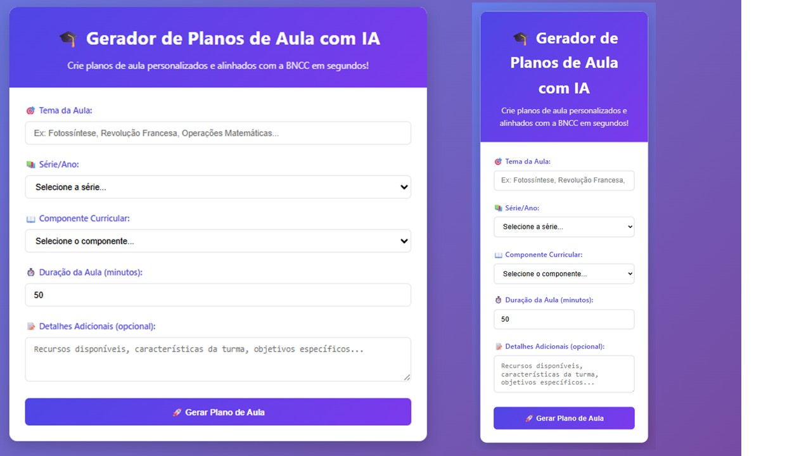
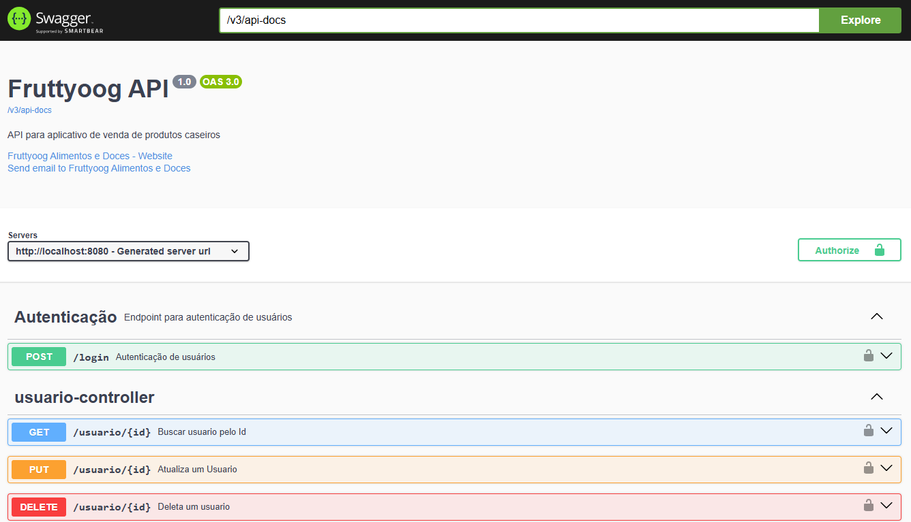
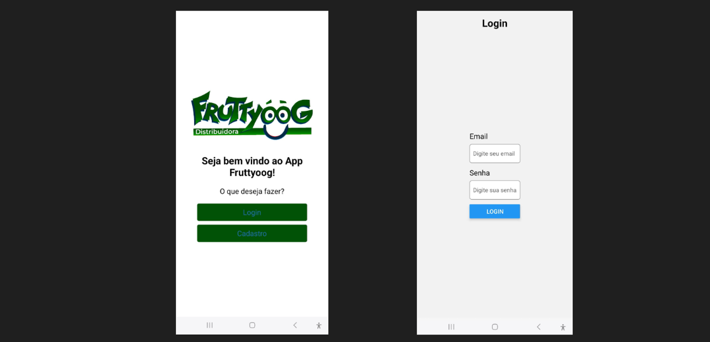
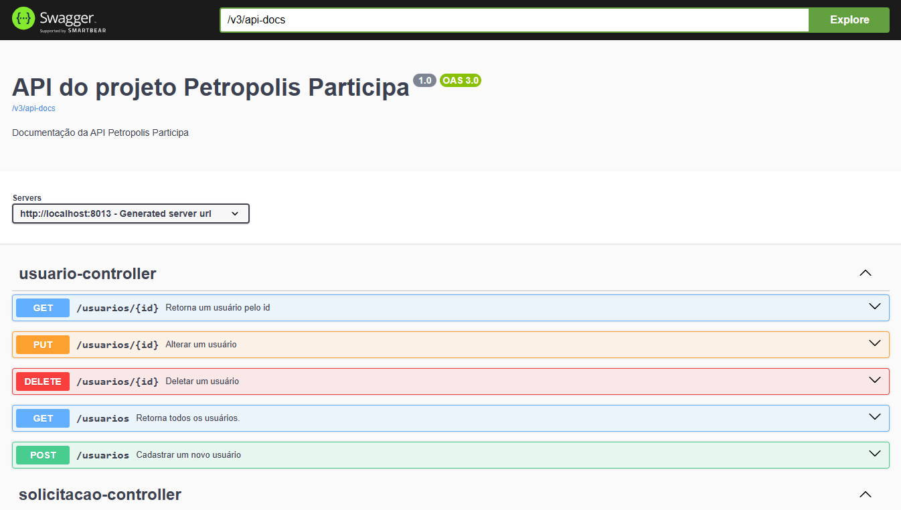
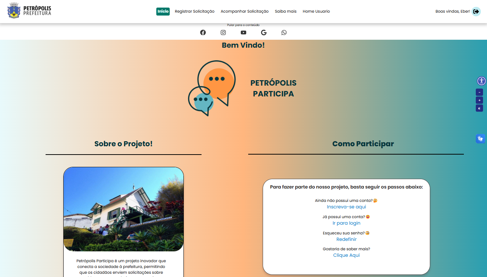
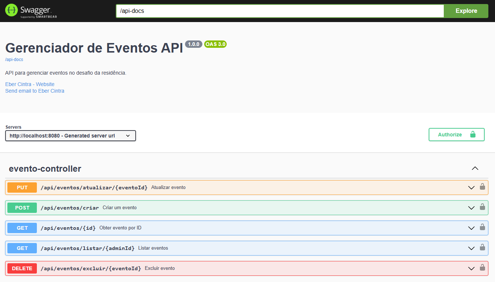
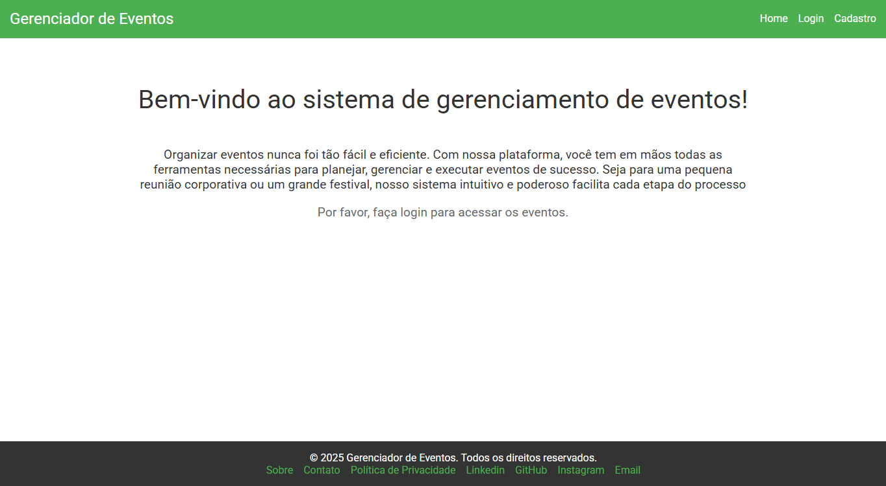
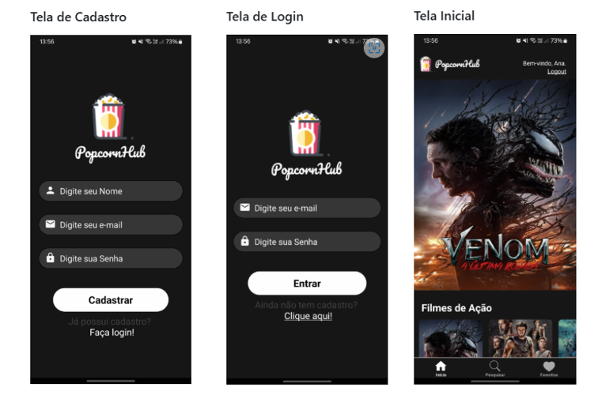
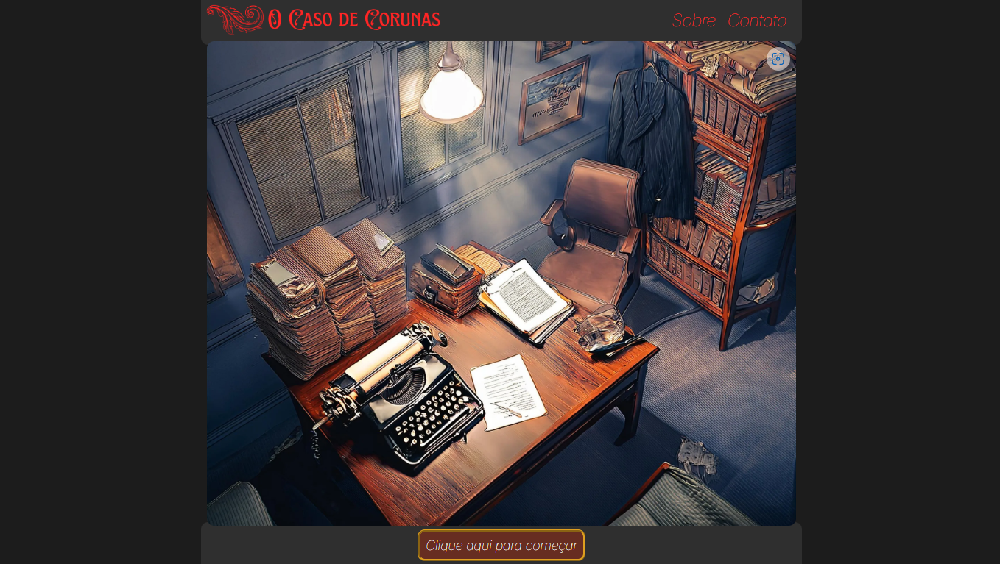
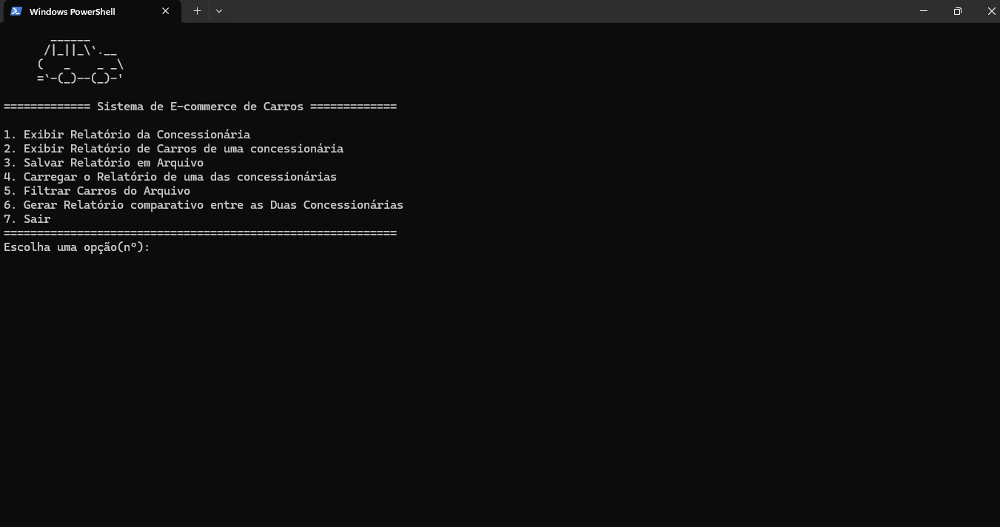

Desenvolvedor Fullstack formado pelo Serratec/Senai -RJ
Java | Spring Boot | React/React Native | APIs REST | PostgreSQL |
Aplicações Web e Mobile
Works
Escribo - Gerador de Plano de Aula
Desafio Escibro - Uma aplicação web que gera planos de aula personalizados utilizando a API Gemini da Google e
armazena os
resultados no Supabase.

• • •
Fruttyoog
Em desenvolvimento: APIs REST, que tem como objetivo facilitar a gestão de uma empresa
de produtos caseiros variados. A API foi desenvolvida para gerenciar categorias de
produtos, clientes, fornecedores, pedidos, compras entre outras entidades. A aplicação
utiliza autenticação JWT para segurança e segue o padrão CRUD (Create, Read, Update,
Delete) em suas principais entidades.

• • •
FruttyoogApp
Em desenvolvimento. Está sendo desenvolvida em React Native para consumir as APIs REST do
projeto Fruttyoog. Estou utilizando typescript para garantir uma melhor tipagem e
organização do código. O aplicativo tem como objetivo facilitar a gestão de produtos
caseiros variados, permitindo que os usuários façam pedidos e compras de forma prática e
eficiente.

×
Digite seu usuário do GitHub para conceder acesso aos repositórios privados.
Desenvolvimento em grupo para criar o backend deste projeto. Utilizamos Java Spring Boot, com
o objetivo de criar uma API robusta e eficiente para interagir com o front-end. A aplicação
foi projetada para permitir que os cidadãos de Petrópolis solicitem serviços emergenciais
diretamente às secretarias da prefeitura.

• • •
Petrópolis Participa - site
O front-end deste projeto foi desenvolvido utilizando React, proporcionando uma interface
moderna e responsiva para os usuários. A aplicação permite que os cidadãos se cadastrem
e solicitem serviços emergenciais diretamente às secretarias da prefeitura.
O design foi cuidadosamente elaborado para garantir uma experiência intuitiva e agradável
para os usuários.

• • •
Gerenciador Eventos API REST
Desenvolvi este projeto como parte de um desafio para criar um gerenciador de eventos
utilizando Java Spring Boot. O objetivo foi construir uma aplicação robusta e
eficiente para gerenciar eventos, incluindo funcionalidades de administração, login,
upload de imagens, gerenciamento de usuários, cadastro de eventos, etc.

• • •
Gerenciador Eventos - site
Front-end para o consumo da Api Gerenciador Eventos. Desenvolvido em React com
interface moderna e responsiva. O objetivo é proporcionar uma interface intuitiva e
eficiente para os usuários interagirem com o gerenciador de eventos.

• • •
PopCornHub
PopcornHub é um aplicativo completo para amantes de cinema, oferecendo informações
atualizadas sobre os filmes mais populares do momento e permitindo a navegação por
categorias variadas. Com uma busca eficiente, o usuário pode facilmente encontrar títulos ou
categorias específicas. Além disso, o aplicativo oferece a funcionalidade de adicionar
filmes à lista de favoritos, proporcionando uma experiência personalizada e prática.
Desenvolvido em React Native utilizando um API externa. Desenvolvimento feito em grupo.

• • •
Caso-Corunas
G4_Enigmas foi desenvolvido em grupo. É um jogo interativo no estilo "detetive", onde
os jogadores assumem o papel do investigador Damian, especializado em resolver casos difíceis.
A missão é resolver o mistério por trás de uma série de desaparecimentos na pequena e sombria
cidade de Corunas. O jogo combina HTML, CSS e JavaScript para proporcionar uma experiência
envolvente e misteriosa, com páginas desenhadas para interatividade e exploração. O sistema
de envio de emails permite que os jogadores enviem suas teorias ou perguntas diretamente
para nossa equipe de suporte.

• • •
Concessionaria
Desenvolvi este sistema de administração de concessionárias utilizando Java, com o objetivo
de gerenciar informações sobre concessionárias e seus carros. A aplicação permite a criação de
relatórios, o armazenamento e a recuperação de dados, além de oferecer funcionalidades de
filtragem e comparação entre concessionárias.

About
Sou Desenvolvedor Full Stack com experiência prática em React, React Native, Java (Spring Boot), TypeScript e
PostgreSQL. Participei de projetos completos — de e-commerce a sistemas administrativos e aplicativos mobile —
aplicando boas práticas, versionamento com Git/GitHub e metodologias ágeis (SCRUM).
Atualmente atuo como freelancer, criando APIs e aplicações web/mobile, com foco em performance, escalabilidade e
código limpo. Minha formação inclui a Residência em TIC (Serratec/SENAI), onde desenvolvi soluções full stack do
zero (front-end, back-end e mobile).
Tenho como diferencial minha experiência anterior em organização, logística e acessibilidade, além de ser
fluente em LIBRAS, o que amplia minha comunicação inclusiva em equipe.
Busco oportunidades para colaborar em projetos desafiadores, aprender com profissionais experientes e contribuir
para o desenvolvimento de soluções tecnológicas de impacto.